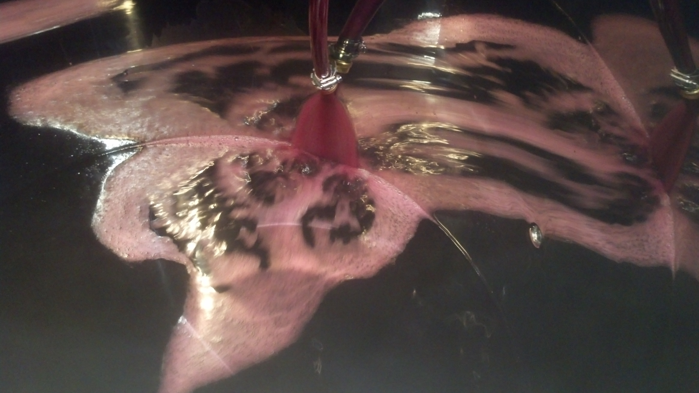
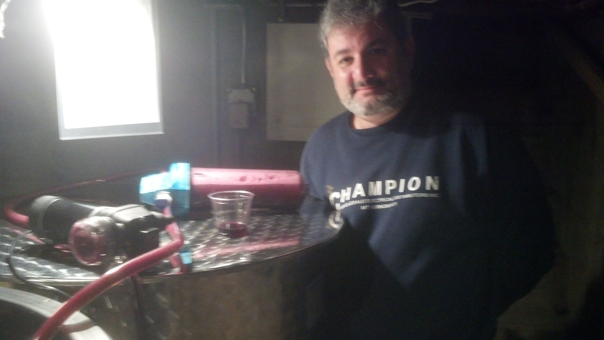

Homemade Wine Steps
|
Processing the grapes : Red grapes are destemmed, crushed and fermented with the skin and pulp for several days and then later pressed. | |
|
Yield of Grapes: To calculate expected yield of wine grapes needed usually 60 to 80 pounds for 5 gallons of wine. Once the grapes are delivered, we use a stainless steel crusher/de-stemmer to crush the grapes producing the juice. | |
|
Fermentation: Red grapes are pressed after a few days of fermentation and then the yeast is added which is now referred to as the must. Stir the must on a daily basis with a stirring paddle so as to break up any dried formation of solids that may rise to the top. | |
|
Racking the wine means to siphon the wine must from one container to the next, so as to leave any sediment behind. In fact that is the sole purpose of racking, is "to leave the sediment behind." The goal is to remove the sediment of stems, skins and sediment of yeast which if not done can affect the taste of the wine. Some wines are racked 2 or three times. Once the wine is completely clear use a hydrometer to verify that wine has completed the fermenting process, it is time to bottle. | |
|
Bottling your wine is a fairly straight forward process. It is simply a matter of siphoning the wine into the bottles and then corking them. You will need wine bottles, corks and a corker. | |
 |
Bottling of the wine |
Fermenting the grapes |
 |
|  | After the fermentation is complete, the wine is transferred from one vat to another. |
filtering the wine for taste test |  |
Showing Bottling
| Interesting Websites for Wine Making |
|---|
| E.C. Kraus Home Wine & Beer Making |
| Prospero Grapes |
| How to Make Homemade Wine |